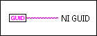
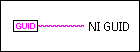

Create NI GUID VI
Owning Palette: Additional String VIs and Functions
Requires: Base Development System
Generates a globally unique identifier (GUID) string.

 Add to the block diagram Add to the block diagram |
 Find on the palette Find on the palette |
Owning Palette: Additional String VIs and Functions
Requires: Base Development System
Generates a globally unique identifier (GUID) string.

| Add to the block diagram |
Find on the palette |